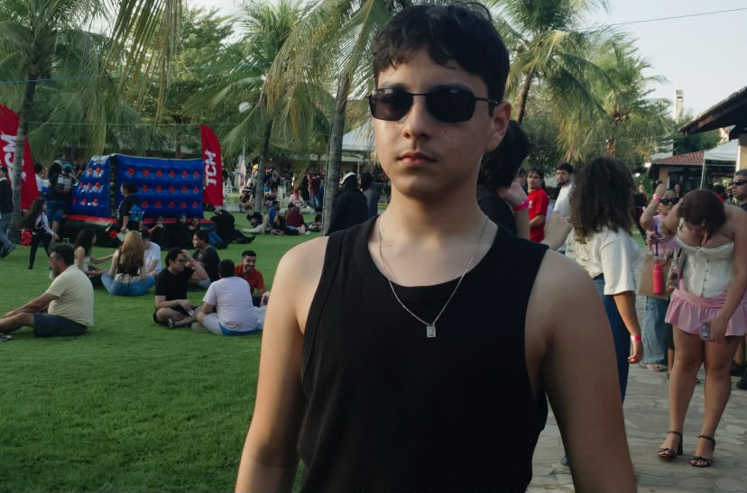
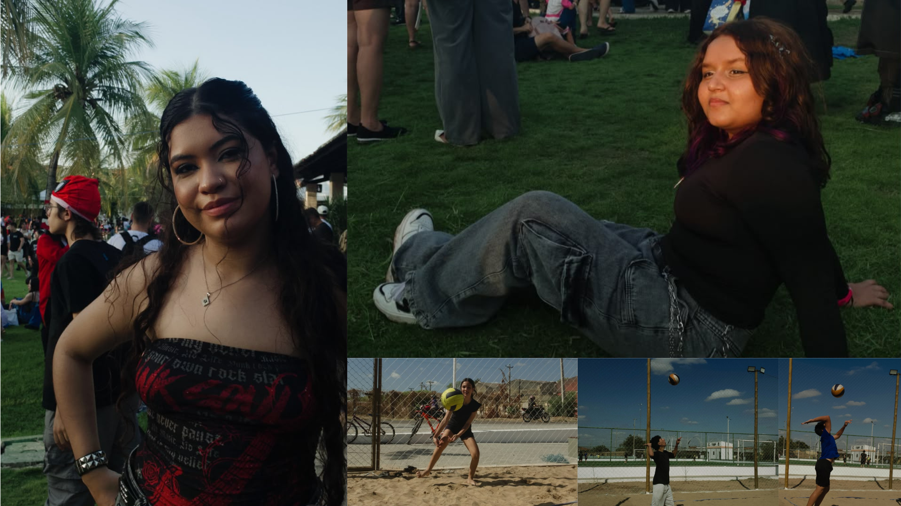
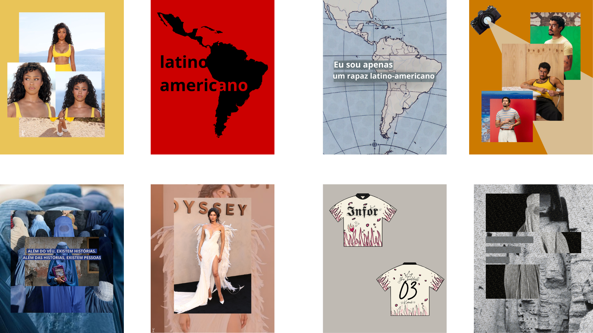
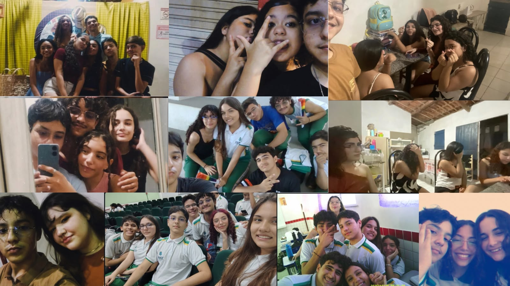

𝐊𝐚𝐮𝐞̂."The baddest bitchs ain't in LA"
Olá sou Kauê, estudo na EEEP Jeová Costa Lima.Meu verdadeiro grande interesse é pela saúde, sempre me fascinei por cirurgias e pelo ato de cuidar de alguém. Por isso durante quase 4 anos no ensino fundamental 2 eu quis entrar para EEEP no curso de enfermagem, mas a vida deu uma reviravolta que nunca imaginaria que me aconteceria, eu coloquei informática. Não tive nada além de certeza que estaria nesse colégio, sempre acreditei que posso e que tenho.
Mas isso não significa que eu odeie tecnologia, desde muito cedo fui ligado em telas e jogos, tendo interesse em fazer meus própios sites e aplicativos; com meus 10 anos eu conheci o app Picsart, aonde fiz e faço muitos designs e colagens. Minha maior fonte de referência para tecnologia é definitivamente o Leon e a Nilce do Coisa de Nerd.
Minhas experiências com a área da T.I ainda se resumem muito ao curso, porém já fiz um jogo semelhante ao Pou no Scratch em um curso de programação por bloco.
Meu desejo para atuar no fruto profissionalmente é como designer gráfico para artistas da indústria da música (fazendo capas de album, single, arte promocional e etc.) e/ou diretor criativo de um grupo ou de um artista solo.
Quero alcançar um nível de referência no meu ramo, sendo símbolo de força e inspiração.
Coisas sobre mim:
Tiro fotos.

Coisas sobre mim:
Faço designs.

Coisas sobre mim:
Tenho amigos.
